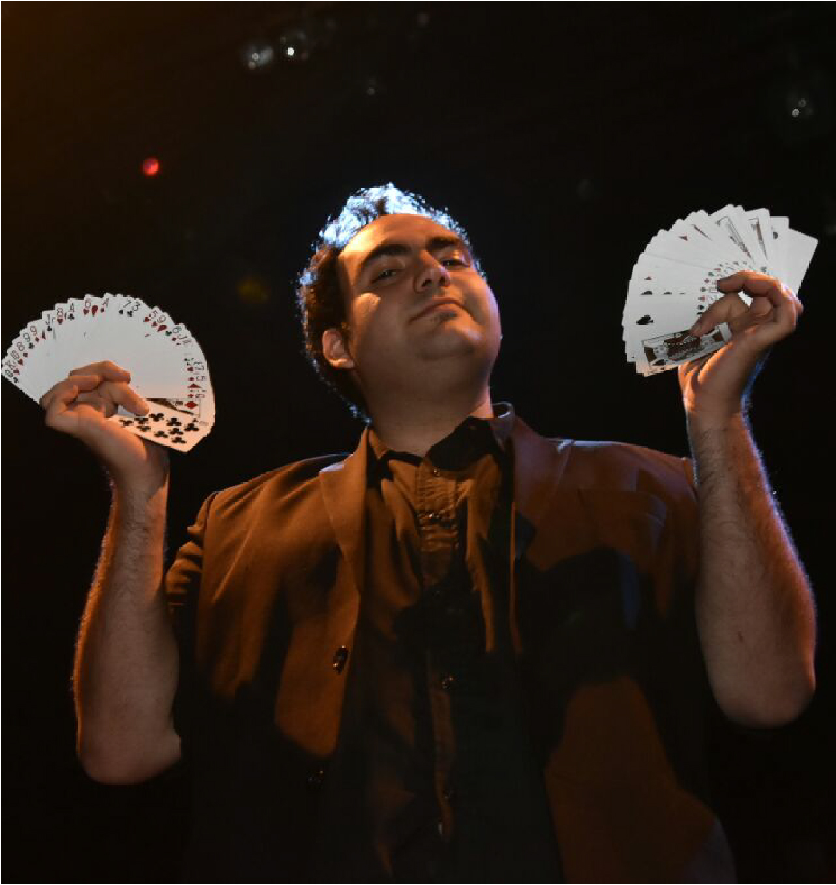

BIOGRAFIA
Mago profecional de la ciudad de Cordoba Argentina, Mediterraneo de Corazon, desde el 2012 se dedica a dibujar sonrisas de felicidad y asombro, junto al hermoso arte de la magia
La magia también cura. Hasta el año 2011, a los 23 años, yo no conocía la magia, era estudiante de Medicina y tenía un trabajo que me daba lo suficiente como para estudiar y vivir. Cierto día fui al teatro y vi la presentación de un mago: esa experiencia despertó en mí una serie de sensaciones que en poco tiempo se convertirían en una pasión y en una forma de vida. Ah, y creo que la magia también sana.
Dos magos y un congreso. Conocí al mago Rubén Rivas, quien me introdujo más en este mundo. En 2012 asistí a un Congreso de Magia en Buenos Aires: al terminar ya no era el mismo, provocó una revolución en mi vida. Más tarde comencé a estudiar en la escuela de Carlos Dinucci, donde ahora doy clases.
Círculo virtuoso. Ingrese en el Círculo Mágico de Córdoba, entidad que nuclea a los magos de la ciudad, un lugar perfecto para fomentar el crecimiento de la actividad. Allí conocí colegas y amigos con los cuales tengo el placer de compartir esta pasión sin igual.
Todas las magias, la magia. Me considero un mago generalista porque no quiero dedicarme a un rubro determinado. Tengo rutinas preparadas para niños, para adultos, magia de recepción, magia de cerca y otras. Vivo de la magia, me contratan para eventos de todo tipo: familiares, fiestas, reuniones de empresas, encuentros, entre otros.